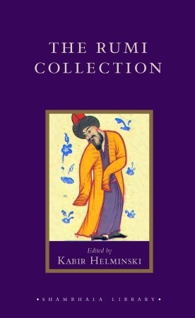
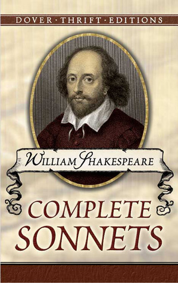

5: The Divine Comedy

Ratings : 🌟 4.0/5
Author : Dante Alighieri
Genre :Epic Poetry
Year Published : 1320
Pages : 798
Brief:
The Divine Comedy is composed of 14,233 lines that are divided into three cantiche (singular cantica) – Inferno (Hell), Purgatorio (Purgatory), and Paradiso (Paradise) – each consisting of 33 cantos (Italian plural canti). An initial canto, serving as an introduction to the poem and generally considered to be part of the first cantica, brings the total number of cantos to 100. It is generally accepted, however, that the first two cantos serve as a unitary prologue to the entire epic, and that the opening two cantos of each cantica serve as prologues to each of the three cantiche
Written in the first person, the poem tells of Dante's journey through the three realms of the dead, lasting from the night before Good Friday to the Wednesday after Easter in the spring of 1300. The Roman poet Virgil guides him through Hell and Purgatory; Beatrice, Dante's ideal woman, guides him through Heaven. Beatrice was a Florentine woman he had met in childhood and admired from afar in the mode of the then-fashionable courtly love tradition, which is highlighted in Dante's earlier work La Vita Nuova
4: The Flowers of Evil

Ratings : 🌟 4.2/5
Author : Charles Baudelaire
Genre :PoetryLyric Poetry
Year Published : 1857
Pages : 464
Brief:
TThe Flowers of Evil, which T.S. Eliot called the greatest example of modern poetry in any language, shocked the literary world of nineteenth century France with its outspoken portrayal of lesbian love, its linking of sexuality and death, its unremitting irony, and its unflinching celebration of the seamy side of urban life. Including the French texts and comprehensive explanatory notes to the poems, this extraordinary body of love poems restores the six poems originally banned in 1857, revealing the richness and variety of the collection.
3: The Complete Poems of Emily Dickinson

Ratings : 🌟 4.2/5
Author : Emily Dickinson
Genre :Poetry
Year Published : 1890
Pages : 716
Brief:
Only eleven of Emily Dickinson’s poems were published prior to her death in 1886; the startling originality of her work doomed it to obscurity in her lifetime. Early posthumously published collections-some of them featuring liberally “edited” versions of the poems-did not fully and accurately represent Dickinson’s bold experiments in prosody, her tragic vision, and the range of her intellectual and emotional explorations. Not until the 1955 publication of The Complete Poems of Emily Dickinson, a three-volume critical edition compiled by Thomas H. Johnson, were readers able for the first time to assess, understand, and appreciate the whole of Dickinson’s extraordinary poetic genius.
This book, a distillation of the three-volume Complete Poems, brings together the original texts of all 1,775 poems that Emily Dickinson wrote.
2: The Rumi Collection
Ratings : 🌟 4.4/5
Author : Rumi
Genre :Poetry
Year Published : 1998
Pages : 304
Brief:
Rumi's poems are beloved for their touching perceptions of humanity and the Divine. Here is a rich introduction to the work of the great mystical poet, featuring leading literary translations of his verse. Translators include Coleman Barks, Robert Bly, Andrew Harvey, Kabir Helminski, Camille Helminski, Daniel Liebert, and Peter Lamborn Wilson. To display the major themes of Rumi's work, each of the eighteen chapters in this anthology are arranged topically, such as "The Inner Work," "The Ego Animal," "Passion for God," "Praise," and "Purity." Also contained here is a biography of Rumi by Andrew Harvey, as well as an introductory essay by Kabir Helminski on the art of translating Rumi's work into English.
1: Complete Sonnets
Ratings : 🌟 4.3/5
Author : William Shakespeare, Stanley Appelbaum
Genre :PoetrySonnets
Year Published : 1991
Pages : 74
Brief:
Without a doubt the most important of Shakespeare's nondramatic works, the sonnets have engendered reams of scholarly disputation as to the identity of "the dark lady" and the "lovely boy" to whom the vast majority are addressed. Controversy has also long simmered over the full name of the "W.H." of the dedication. What is not in dispute is the superior quality of these lyrics, which rank among the finest sonnets ever written — in any language. Overt 150 poems deal with love, friendship, the tyranny of time, beauty's evanescence in power, death, and other themes in language unsurpassed in power, precision, and beauty. Now this inexpensive Dover edition enables any lover of poetry or fine literature to have this exquisite verse in his or her personal library. A brief glossary illuminates a number of archaic terms.